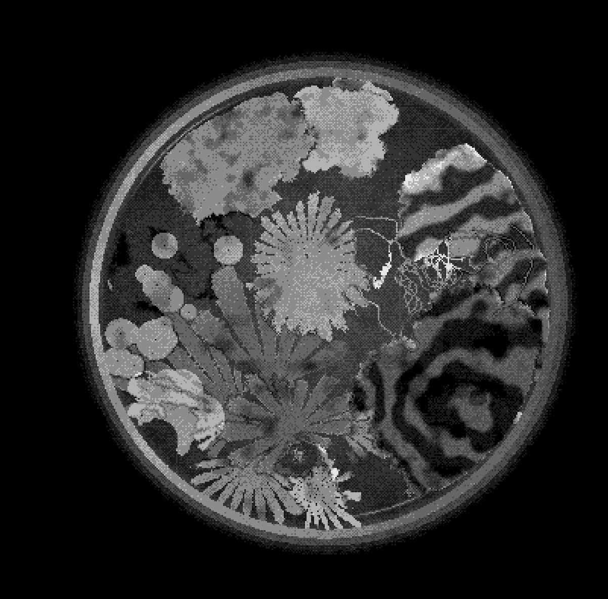
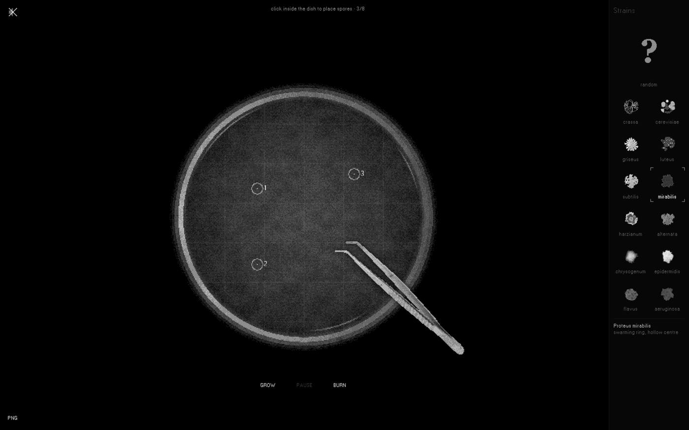
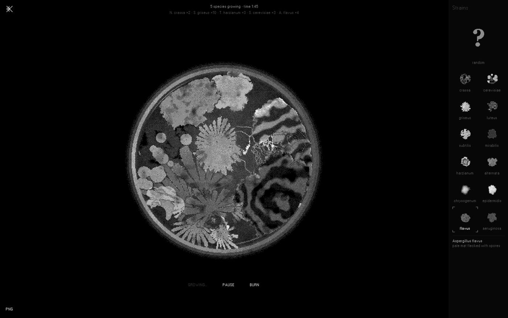
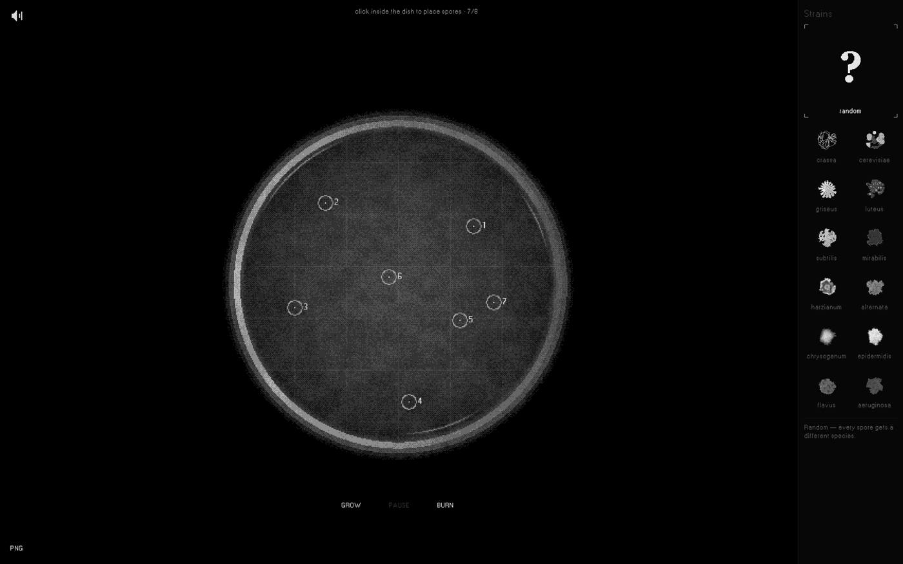
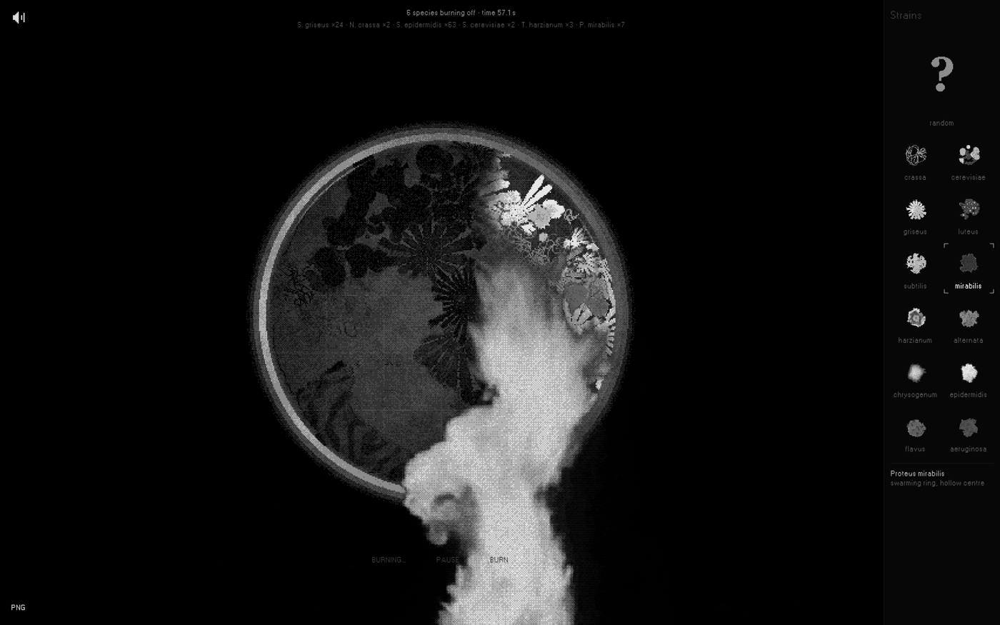

A browser-based generative art game. Visitors grow digital mold in a virtual Petri dish: they place spores, choose a strain, and watch the colonies branch, layer and collide as they compete for the same closed space. Each colony adds its own voice to a slowly building, polyphonic soundscape.
The image is monochrome and pixelated, like a laboratory record. The visitor can pause the process, burn the dish clean and begin again, or export any moment as a PNG — a unique record of one experiment. No living material is involved; the strains borrow real names and growth logics, but the work is an artistic interpretation, not a biological model.




I studied different types of mold in courses and encounter it constantly in everyday life. I am unsettled by the invisible world that quietly consumes what surrounds us. Digitisation and gamification are personal ways of working through that feeling: by breaking a natural process down into rules and observing it closely, I can begin to make peace with it.
Mold.log gives this method a playable form. The Petri dish becomes a contained space in which fear can turn into curiosity. The image is mediated, monochrome and available for inspection; the process can be paused, cleared and approached again. That sense of control is what lets me — and, I hope, the visitor — spend time with something we would otherwise prefer not to see.
Darius Nazarov (b. 2002) is an artist based in Belgrade, Serbia, trained in parametric architecture. His practice spans experimental Art & Science games and media installations, using digital systems to explore natural processes and the emotions they provoke. He represents OGOxWOW Buro, an art collective bringing together several artists, and presents Mold.log as an individual author.
| Project | Year | Venue | Note |
|---|---|---|---|
| ExtraLives | 2026 | Boston Cyberarts Gallery, Boston | Playable art · Mold.log as a station |
| Video Game Artshow | 2025–26 | Another Corner | Group show of video-game art |
| Signal | 2024 | Signal festival | Media installation, festival art programme |
| Archstoyanie | 2024 | Nikola-Lenivets | Site-specific media installation |
| Architecton | 2024 | with SA Lab | Media installation |